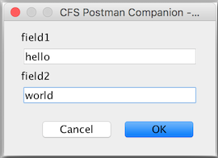

Welcome to the website of connorsadlervelo 8}
Matty has helped aswell!
Bedtime now!
I'll add stuff as I go... and hopefully tidy up the layout somewhat
CFS Postman Companion
Download CFS Postman Companion here
Slack black css
Download here
Installation and Usage
- download the zip above
- unpack the zip into a new empty folder
- run a Terminal and cd into that folder
- cd bin
- ./postmancompanion
The application should now be running on port 18080 by default
The small UI window which appears can be minimized
- Make a request from Postman like this:
http://localhost:18080/?showMessage=my message blah&promptFieldNames=field1&promptFieldNames=field2
You must specify a "showMessage" parameter and one or more "promptFieldNames" parameters
-
You'll see a prompt box UI pop up
It will show a field for every "promptFieldNames" parameter you specify
For example:

-
Fill in the values in the UI and press OK
-
Postman will get a response like this:
{"field1":"hello","field2":"world"}
The keys are the prompt field names, the values are the values you typed in
-
Parse the response with a Postman script
TODO: Show example script
Source Code and Contributions
I'll upload the source to github soon - watch this space
Contact Me
Email me here